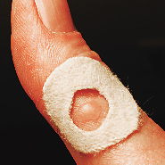
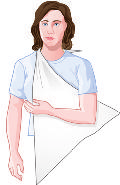
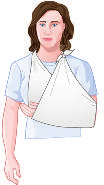

■ Signs and symptoms: Frequent near-liquid diarrhea with mucus and blood. Sudden onset of high fever and chills, abdominal pain, cramps and bloating, fatigue, and vomiting. Vomiting may cause rapid and severe dehydration, which can lead to shock and death if it is not treated.
■ Treatment: Maintain fluid intake using rehydration or sports drinks.
If continued diarrhea or nausea and vomiting make adequate hydration impossible, seek immediate medical care. Imodium (loperamide) should not be used to treat acute dysentery because it can further damage the lining of the intestine. Most people will need antibiotic therapy and should see a doctor as soon as possible.
MED–
ICAL
2182_Tab03_051-074.qxd 8/18/11 12:16 PM Page 56
MED–
ICAL
Gallstones
The gallbladder is a small, saclike organ located in the abdomen just under the liver. It holds bile, which is made in the liver and helps to break down fat. The gallbladder moves bile into the small intestine through the common bile ducts. Gallstones are solid particles that form within bile and can easily obstruct the bile duct. They can be as small as a grain of rice or as large as a golf ball.
■ Signs and symptoms: Severe pain in the right upper portion of the abdomen; may be referred to the right shoulder and increase with deep inspiration. Nausea and vomiting can occur, as can fever.
■ Treatment: Most measures to relieve symptoms are just temporary.
The person should avoid drinking or eating anything and seek immediate medical care.
Vomiting
Vomiting can be caused by a stomach flu, unusual kinds or amounts of food, or bacterial infection (e.g., food poisoning). It can also point to serious problems such as head injury, meningitis, or a heart attack.
■ Signs and symptoms: Inability to keep food or water down.
■ Treatment: Avoid eating and drinking for several hours until the person feels better. If the person has not vomited for 1 hour, he or she can take small sips of water or a rehydration or sports drink. If vomiting continues, or if it contains blood or what looks like coffee grounds, seek immediate medical care.
ALLERGIES
Most allergies are caused by pollen, dust, molds and mildew, animal dander, and other irritants in the air. A few people have severe allergies to insect stings, nuts and shellfish or other foods, or drugs such as penicillin.
Allergic Reaction
Allergies are very common and can have many causes. Simple allergic reactions cause mild to moderate symptoms, such as a rash or sneezing, but are not life-threatening.
2182_Tab03_051-074.qxd 8/18/11 12:16 PM Page 57
■ Signs and symptoms: Itchy, watery eyes; runny, stuffy, or itchy nose;
sneezing, fatigue, rash, and hives.
■ Treatment: The person should consult a physician, because overthe-counter and prescription decongestants and antihistamines may help with some allergies. If the person knows what he or she is allergic to, the best treatment is to avoid it whenever possible. The person should also keep a record of reactions to plants, animals, foods, medicines, or chemicals that seem to trigger symptoms.
Anaphylaxis
Anaphylaxis is a potentially fatal allergic reaction with a rapid onset.
Anyone with severe allergies should learn to recognize warning signs early, have medication available for self-treatment, and seek immediate medical care if warning signs occur.
■ Signs and symptoms: Rash, itching, hives, or swelling around the site of exposure. Trouble breathing, swelling of the tongue or throat, hoarse voice, chest tightness, and a drop in blood pressure causing lightheadedness and dizziness. The reaction is sudden, severe, and potentially fatal.
■ Treatment: People who have a history of anaphylaxis should carry an autoinjector of epinephrine (e.g., EpiPen). Epinephrine is most effective if given before symptoms become severe. Epinephrine treats anaphylaxis more effectively than either antihistamines or asthma inhalers. If the person has been stung by an insect, dislodge the stinger (see page 138). If epinephrine isn’t available, keep the person’s airway open and seek immediate medical care. Immediate medical care is required even after an epinephrine injection. If the person becomes unconscious and stops breathing, follow guidelines for CPR in Tab 2: CPR.
MED–
ICAL
2182_Tab03_051-074.qxd 8/18/11 12:16 PM Page 58
MED–
ICAL
SAFETY TIP—If you are at risk for anaphylaxis, your doctor
★ may suggest that you carry an allergy kit. These kits contain antihistamine pills, an injection of epinephrine (e.g., EpiPen) that you can give yourself in an emergency, and alcohol wipes for cleaning the site before and after the injection. Seek immediate medical care even after using an allergy kit.
EMERGENCY CHILDBIRTH
Childbirth is a natural event, even when it happens unexpectedly at home or on the way to the hospital. Labor is the process of passing the baby and placenta from the uterus through the vagina. The powerful contractions of labor result from coordinated activity of the uterine muscle.
■ First stage of labor: Mild contractions occurring 10 to 15 minutes apart. The mother may experience discomfort in the back and abdomen.
■ Second stage of labor: Rupture of the amniotic sac, or “water breaking,” usually early in the second stage. Toward the end of this stage, the urge to push or bear down becomes strong.
Contractions last 50 to 70 seconds and occur at intervals of 2 to 3 minutes. A discharge of blood and mucus is a sign of impending birth.
■ Third stage of labor: Delivery of the baby followed by delivery of the placenta.
2182_Tab03_051-074.qxd 8/18/11 12:16 PM Page 59
GUIDELINES FOR CHILDBIRTH
Step 1. If birth is imminent, stay calm, call 911 for immediate medical care, and reassure the mother.
Step 2. Have the mother lie down on a flat, comfortable surface.
Position her on her back with her knees bent, feet flat, and legs spread wide apart. Place layers of linens, towels, or blankets under her.
Step 3. Encourage the mother not to push. Your job is to support her until medical care arrives.
Step 4. Never let the mother hold her knees together; it won’t slow the process and may complicate the birth or harm the baby.
Step 5. Use a watch to time contractions. If the baby is on the way, contractions will occur less than 2 minutes apart.
Step 6. Once you see crowning—the top of the baby’s head appearing in the vaginal opening—wash your hands with soap and water, put on the gloves from your first aid kit, and prepare for delivery.
Continued
MED–
ICAL
2182_Tab03_051-074.qxd 8/18/11 12:16 PM Page 60
MED–
ICAL
GUIDELINES FOR CHILDBIRTH—cont’d
Step 7. Never pull on the baby during delivery.
Step 8. Once the baby’s head has cleared the birth canal, make sure the umbilical cord isn’t wrapped around the baby’s neck.
If it is, gently ease it over the baby’s head. Also use a suction bulb to remove secretions from the nose and mouth.
Step 9. After the head is clear, the next contraction should deliver the baby’s shoulders, and then the rest of the body will slip out.
Step 10. Wipe the baby’s face with a clean towel.
2182_Tab03_051-074.qxd 8/18/11 12:16 PM Page 61
Step 11. Hold the baby with the head slightly lower than the body to drain fluid from the nose and mouth. Once again, use a suction bulb to remove secretions from the nose and mouth.
Step 12. Use a clean towel to grasp the baby firmly; newborn babies are very slippery.
Step 13. Warm the baby with a clean blanket or large towel and place the baby in the mother’s arms.
WHAT TO DO NEXT
■ Don’t cut the umbilical cord. If the placenta is delivered before help arrives, handle it gently and place it in a plastic bag.
■ Massage the mother’s belly firmly to help the uterus contract and stop further bleeding once the placenta is out.
MED–
ICAL
2182_Tab03_051-074.qxd 8/18/11 12:16 PM Page 62
MED–
ICAL
SAFETY TIP—If the baby does not start breathing within
★ 30 seconds, rub his or her back or stroke the bottom of the feet.
If the baby is still not breathing, begin infant CPR (see Tab 2: CPR).
DEHYDRATION
Dehydration is a loss of too much fluid from the body. The person loses not only water, but also important minerals called electrolytes. When a viral stomach flu or an intestinal “bug” causes vomiting and/or diarrhea, the person may be too sick to hold down even sips of fluid, and dehydration can develop rapidly. Dehydration can also be caused by intense exercise and excessive sweating without adequate fluid replacement. Severe dehydration can be life-threatening, especially for infants, children, and the elderly.
■ Signs and symptoms: Mild: Vomiting and diarrhea, dry mouth and tongue, and dark or not much urine. Severe: Sunken eyes, no tears, fast breathing and heartbeat, little or no urine for 8 hours, confusion, and skin that sags when you pinch it.
■ Treatment: Mild: To stop vomiting or diarrhea, the person should avoid eating solid foods. During the first 24 hours, the person should sip water or a rehydration or sports drink. The person should keep the sips small until the stomach can handle larger amounts.
Drinking too much fluid can make the person vomit again. Severe:
Seek immediate medical care if vomiting and diarrhea last more than 24 hours, or the person is very young or elderly with severe symptoms. Intravenous fluids may be required.
SAFETY TIP—If you exercise or work in the heat, avoid
★ caffeine. It makes you urinate more often, which dehydrates you faster. Drink water or a sports drink before, during, and after exercise and work. If you start feeling dehydrated, stop what you’re doing, rest, and drink plenty of fluids.
2182_Tab03_051-074.qxd 8/18/11 12:16 PM Page 63
DIABETES
A person with diabetes either doesn’t make enough insulin or can’t use it effectively. Insulin is a hormone that helps your body use sugar (glucose) from food as energy or store it for later use. With diabetes, too much sugar accumulates in your blood and does not reach the body’s cells. This excess sugar can cause both acute and chronic complications.
Insulin and sugar must be balanced in the body or the cells will starve.
Imbalances of blood sugar are called hyperglycemia and hypoglycemia.
Hyperglycemia
Hyperglycemia is an excess of sugar in the blood. The amount of sugar and the rate at which it accumulates will determine associated symptoms. When both the amount and the rate are high, diabetic ketoacidosis (DKA) or a diabetic coma may develop.
■ Signs and symptoms: Confusion, weakness, rapid breathing and pulse, excessive thirst, frequent urination, nausea, loss of consciousness, coma, and blood glucose greater than 180 mg/dL.
■ Treatment: Severe hyperglycemia needs immediate medical attention. It may be treated with insulin or oral medication, but only under medical supervision.
Hypoglycemia
In hypoglycemia, the blood is too low in sugar. If a person takes too much insulin or doesn’t eat after injecting it, blood sugar will fall rapidly.
Hypoglycemia may also be caused by taking too large a dose of an oral medication. These medications are long lasting, and hypoglycemia caused by them generally requires hospital admission.
■ Signs and symptoms: Headache, shakiness, dizziness, anxiety, loss of consciousness, and blood glucose less than 70 mg/dL. The person probably has a history of diabetes and takes insulin or some oral medication (metformin, glyburide, and glipizide are common ones).
■ Treatment: If the person can swallow, give fruit juice, a nondiet soft drink, or table sugar dissolved in water. If the problem is low
MED–
ICAL
2182_Tab03_051-074.qxd 8/18/11 12:16 PM Page 64
MED–
ICAL
blood sugar, the added sugar will help quickly. If the problem is too much sugar, the sugar will not cause further harm. Seek immediate medical care.
SAFETY TIP—Your blood sugar level changes throughout the
★ day and varies with diet and exercise. If it’s normal, a “random”
blood sugar test taken at any time will show a range of 70–130 mg/dL before meals and less than 180 mg/dL 2 hours after starting a meal. A fasting blood sugar level (no food or liquids for 8 hours) is normal if less than 100 mg/dL. A fasting level between 100 and 125 mg/dL signals prediabetes; a level of 126 mg/dL or higher signals diabetes.
EAR PROBLEMS
Earache
Earaches are particularly common in children and are usually caused by infection of the middle ear. Unlike swimmer’s ear and other ear canal infections, these infections develop deeper in the ear and can cause more serious problems. They often begin during a cold. Colds can swell and close the eustachian tube (which connects the middle ear to the throat), with a resulting buildup of fluid. Bacteria or viruses can grow in the fluid and cause the infection.
■ Signs and symptoms: Pain, swelling, or redness around or behind the ear, fever, hearing loss, and crying and/or ear-pulling in a baby or toddler. Pus or blood may be draining from the ear. Headache, stiff neck, or fever may indicate a more serious illness.
■ Treatment: Put a warm washcloth on the ear to relieve pain. Seek immediate medical care and report fever or discharge. Use any prescribed medication as directed. Keep the ear dry during bathing.
Swimmer’s Ear
Swimmer’s ear is an irritation or infection of the ear canal. It often happens after water, sand, or dirt gets inside the ear.
2182_Tab03_051-074.qxd 8/18/11 12:16 PM Page 65
■ Signs and symptoms: Pain, itching, and full feeling; redness and swelling in both the outer ear and the ear canal. Pus or blood may be draining from the ear.
■ Treatment: Gently rinse the ear using a bulb syringe and a mixture of equal parts white vinegar and rubbing alcohol. Make sure the mixture is at body temperature. If the ear itches, try nonprescription swimmer’s eardrops before and after the ears get wet. If symptoms persist, seek medical care.
FAINTING
Fainting is a brief loss of consciousness followed by reawakening. It occurs when the brain receives an insufficient supply of blood for a short time. Fainting is generally not harmful, and someone who has fainted usually recovers quickly with no lasting effects. However, fainting may be life-threatening if there is a serious underlying health condition such as an abnormal heart rhythm. Any episode of fainting warrants medical evaluation unless the person has a recurrent condition and has been instructed in managing it.
■ Signs and symptoms: Sudden, temporary loss of consciousness and collapse. Someone about to faint becomes pale and weak or dizzy, begins to sweat, and then loses consciousness.
■ Treatment: Lower the person to the ground or any flat surface in a face-up position, if possible. Loosen any tight clothing, and try to raise the person’s legs to increase blood flow to the head. Don’t give anything to eat or drink. Because fainting can signal a more serious condition, seek immediate medical care.
FEVER
A fever is a rise in body temperature above the normal 98.6°F (37°C).
Fevers have a variety of causes, the most common of which are bacterial and viral infections. Fevers can be a sign of serious illness, especially in an infant less than 1 year old or an adult more than 65 years old.
MED–
ICAL
2182_Tab03_051-074.qxd 8/18/11 12:16 PM Page 66
MED–
ICAL
■ Signs and symptoms: Flushing, sweating, and skin hot to the touch.
Body temperature is at least 100°F (37.8°C) measured orally or at least 101°F (38.3°C) measured rectally. Confusion signals a more serious problem.
■ Treatment: Increase fluid intake by giving small sips of water or a rehydration or sports drink, sponge with warm water, and give acetaminophen or ibuprofen. Seek immediate medical care if the oral temperature is more than 102° F (38.9°C), if the fever persists, or if the person is confused.
SAFETY TIP—A fever in a child is always cause for parental
★ concern. Most fevers are caused by viral illness, but occasionally they indicate a significant underlying problem. Be especially careful if fever develops in an infant less than 3 months old; infants this young are at risk for hidden infection. Seek immediate medical care if your child is less than 3 months old or shows signs of confusion or restlessness.
SAFETY TIP—Never give aspirin to a child less than 18 years
★ old. Aspirin use during childhood has been linked with a rare but life-threatening condition known as Reye’s syndrome. This condition occurs suddenly and affects the brain and liver. Instead of aspirin, use acetaminophen (Tylenol) or ibuprofen (Motrin) for children who have or are recovering from chickenpox or flu-like symptoms.
HEART EMERGENCIES
Chest Pain (Angina)
Angina, a form of chest pain, is a symptom of heart disease. The pain originates in the heart muscle when the heart has too little blood to work with. Blood flows to the heart through the coronary arteries.
Sometimes these arteries become narrowed by inflammation and fatty deposits. If an artery becomes too narrow, it may not be able to carry enough blood to the muscle. When a person with angina is excited,
2182_Tab03_051-074.qxd 8/18/11 12:16 PM Page 67 exercising, or emotionally upset, the heart beats harder, but the narrowed blood vessels don’t allow enough oxygen to reach the heart cells.
As a result, cells die, causing chest pain, pressure, or discomfort.
■ Signs and symptoms: Chest pain or discomfort that comes and goes, with onset usually related to exertion. The person may be taking a medication such as nitroglycerin to stop the pain.
■ Treatment: Even if rest or medication has relieved the pain, call for immediate medical attention. Prompt action is the key to saving a life. After calling for help, give one adult aspirin if the person is still conscious and is more than 18 years old. If the person collapses, begin CPR (see Tab 2: CPR).
Heart Attack
Unlike in angina, symptoms of a heart attack usually last longer than 10 minutes and do not go away. At least one coronary artery is partially or completely blocked, and without rapid intervention, part of the heart muscle previously supplied by that artery may die. Health factors that put a person at higher risk for having a heart attack include diabetes, high blood pressure, obesity, smoking, and lack of physical activity.
■ Signs and symptoms: Chest pain or heaviness, often radiating to the left arm or jaw, difficulty breathing, and sweating. Women are likely to experience warning signals such as nausea or vomiting, back pain, and fatigue.
■ Treatment: Call for immediate medical attention. After calling for help, give one adult aspirin if the person is still conscious and is more than
18 years old. If the person collapses, begin CPR (see Tab 2: CPR).
SAFETY TIP—Reducing the risk for a heart attack usually means
★ making healthy lifestyle changes by following a low-fat diet rich in fruits and vegetables, lowering salt intake, losing weight, quitting smoking, and getting regular exercise.
MED–
ICAL
2182_Tab03_051-074.qxd 8/18/11 12:16 PM Page 68
MED–
ICAL
Congestive Heart Failure
Congestive heart failure is caused by a decrease in the pumping action of the heart. Blood “backs up” in the body and causes circulatory congestion that leads to fluid retention. Fluid can accumulate in the lungs and body tissues.
■ Signs and symptoms: Shortness of breath, coughing or wheezing, swelling in the legs, ankles, or feet; and fatigue, nausea, and confusion. The person may appear restless and anxious.
■ Treatment: The person may be more comfortable sitting up or leaning forward. Immediate medical care is required.
RESPIRATORY CONDITIONS
Asthma
Asthma is a chronic inflammatory disease of the airways. In acute episodes (asthma attacks), the small air passages become blocked.
Common triggers are respiratory infections, exercise, and exposure to dust, pollens, smoke, certain foods, climatic changes, and pet dander. A person having an asthma attack may not be able to breathe because the chest, air passages, and throat are too constricted.
■ Signs and symptoms: Sudden onset of labored breathing, progressive shortness of breath, chest tightness, wheezing, and coughing.
■ Treatment: Medication can work in the short term. Any asthma attack should be treated aggressively, and the person should seek immediate medical care. For a severe attack, inhaled medication is preferred over liquid or tablets. A person with chronic asthma may already be using an inhaled medication such as albuterol. If so, administer the medication and seek immediate medical care.
Carbon Monoxide Poisoning
Carbon monoxide is a poisonous gas produced by fires and furnaces and present in large quantity in motor vehicle exhaust. It has no color, no odor, and no taste. Carbon monoxide bonds with red blood cells to form a stable compound, carboxyhemoglobin, which reduces the
2182_Tab03_051-074.qxd 8/18/11 12:16 PM Page 69 ability of red blood cells to carry oxygen. The result can be loss of consciousness and death.
■ Signs and symptoms: Headache, nausea, fatigue, confusion, vomiting, and dizziness. High-risk groups include infants, elderly people, pregnant women, and anyone with a previous history of cardiac insufficiency or chronic obstructive lung disease.
■ Treatment: First, move all victims into fresh air. Then seek immediate medical care for anyone affected, including pets. There is no home therapy for carbon monoxide poisoning.
SAFETY TIP—Carbon monoxide poisoning is sometimes called
★ the “silent killer” because the toxic gas can’t be seen, tasted, or smelled. Be careful around malfunctioning furnaces, when using kerosene or propane heaters or stoves, and around gas-powered engines and tools.
Have your furnace checked annually, avoid using open stoves for heat, and make sure there is plenty of ventilation. Consider placing a carbon monoxide sensor in your home.
Emphysema
Emphysema results from damage to the elastic properties of the lungs, almost always by smoking. It decreases the ability of small air sacs
(alveoli) to contract and expand. The alveoli are essential in exchanging oxygen and the waste product of breathing, carbon dioxide. When “old”
air becomes trapped in the alveoli, it takes up space and prevents the influx of “fresh” air.
■ Signs and symptoms: Shortness of breath, coughing, and wheezing.
Bluish lips and skin indicate a dangerously low oxygen supply to the body.
■ Treatment: The person may be more comfortable sitting up or leaning forward. Restlessness and anxiety are common. Many people with emphysema use a home oxygen supply and carry portable
MED–
ICAL
2182_Tab03_051-074.qxd 8/18/11 12:16 PM Page 70
MED–
ICAL
oxygen with them. Administer oxygen, if available, and seek immediate medical care.
Flu (Influenza)
Flu (influenza) is a highly contagious disease caused by viruses that infect the respiratory tract. It lasts from 3 to 5 days and can be followed by fatigue for 2 or 3 weeks. It can cause mild to severe illness and at times can lead to death. At increased risk of complications from the flu are people 65 years old or older, pregnant women, and those with a chronic health problem
(e.g., asthma, diabetes, or heart disease) or a weakened immune system.
Flu viruses spread easily from one person to another through droplets expelled when the infected person coughs or sneezes or by direct contact with the infected person. You can also be infected by touching an object that an infected person has touched, such as a door handle or child’s toy. To prevent these contaminations, anyone with symptoms should wash his or her hands often and cover the nose and mouth when sneezing or coughing.
■ Signs and symptoms: Cough, sore throat, headache, fever, aching muscles and joints, and extreme tiredness. Stomach upsets such as nausea, vomiting, and diarrhea can occur but are more common in children than in adults.
■ Treatment: Some over-the-counter medications can help with the symptoms but don’t cure the flu or shorten its duration. The best advice is to get plenty of rest, drink fluids, and take aspirin (if more than 18 years old) or acetaminophen to relieve a fever. Seek immediate medical care if symptoms become more severe. Antiviral medications are available but must be started within 72 hours after symptoms appear.
2182_Tab03_051-074.qxd 8/18/11 12:16 PM Page 71
COVERING YOUR COUGH
Use your upper sleeve. Use a tissue.
SAFETY TIP—The best way to prevent the flu is by getting a flu
★ vaccination each year. The strains of flu virus change each year, so vaccines are updated to keep them effective. Check with your doctor about getting a yearly flu vaccine.
Hyperventilation
Hyperventilation is an excessively rapid respiratory rate. Breathing too fast causes the carbon dioxide level in your blood to drop too low.
Hyperventilation may be caused by a panic attack or anxiety.
■ Signs and symptoms: Numbness or tingling around the nose and mouth or in the hands and feet; a feeling of panic or anxiety along with a rapid heart rate; and lightheadedness or fainting.
■ Treatment: Try a relaxation technique. Instruct the person to sit down and focus on slowing breathing by taking one breath every 5 seconds.
Breathing through a paper bag on and off for a few minutes may also help slow breathing. Never use a plastic bag for this technique. If the person has chest pain or an underlying illness, or if breathing doesn’t return to normal within a few minutes, seek immediate medical care.
MED–
ICAL
2182_Tab03_051-074.qxd 8/18/11 12:16 PM Page 72
MED–
ICAL
Smoke Inhalation
A fire that produces smoke will rob the air of available oxygen and lead to asphyxia (lack of oxygen). Also, smoke is highly irritating to the airway and may cause the vocal cords to swell shut and cut off the airway. Some types of smoke are very poisonous.
■ Signs and symptoms: Coughing, shortness of breath, headache, and change in mental status. Smoke can irritate the eyes and cause redness and tearing. In serious cases, the skin may turn white or blue from lack of oxygen. Changes in skin color can best be seen in mucous membranes such as the mouth.
■ Treatment: The first thing to do is help the person to get fresh air.
Then seek immediate medical care—oxygen is often required. Further evaluation for more serious respiratory issues will be needed.
SEIZURE
The brain is the control center for the body’s electrical signals. A seizure, sometimes called a convulsion, occurs when the normal signals from the brain change. Although it may be frightening to watch, a single seizure usually lasts only a few minutes. Seizures can be brought on by acute or chronic conditions such as fever or infection, epilepsy, brain injury, extreme heat, or disease.
■ Signs and symptoms: Body stiffness followed by uncontrolled jerking movements; loss of consciousness. Some seizures cause only slight shaking of a hand or other body part. In some cases, the person may stare blankly and not be aware of the surroundings.
■ Treatment: Protect the person from injury. Clear a space; move furniture or other objects out of the way. Don’t force your fingers or anything else into the person’s mouth or try to stop the jerking motion. Loosen tight clothing. Try to stay calm. After the seizure, check for injuries. Turn the person’s head to the side so any vomit or saliva will not block the airway. Provide a safe area where the person can rest until medical help arrives.
2182_Tab03_051-074.qxd 8/18/11 12:16 PM Page 73
SAFETY TIP—Infants and young children may develop seizures in
★ response to a high fever. These are called febrile (fever-induced)
seizures. Such children are at increased risk of recurrent febrile seizures, but few go on to develop a chronic seizure disorder.
STROKE
A stroke occurs when a blood vessel ruptures and bleeds into the brain or when the vessel is blocked by a blood clot or an injury. Within minutes, nerve cells in that part of the brain die. As a result, the part of the body controlled by those cells can’t work properly. A stroke can affect vision, speech, behavior, thought processes, and the ability to move. Sometimes it can cause a coma or death. The risk factors for stroke include high blood pressure, smoking, a diet high in saturated fats and cholesterol, diabetes, heart disease, family history of stroke, and older age.
■ Signs and symptoms: Sudden weakness; numbness; and loss of movement in the arm, leg, or face, usually on only one side.
Headache, paralysis, difficulty with speech or vision, confusion, and loss of consciousness.
■ Treatment: If possible, note the time that the symptoms began.
Have the person rest comfortably and offer reassurance. Don’t let the person eat or drink. If the person collapses, check for breathing and circulation and begin CPR (see Tab 2: CPR) if necessary. Seek immediate medical care. Medical treatment can limit or reduce the damage but must be given quickly to be effective.
SAFETY TIP—You can help prevent a stroke if you control your
★ blood pressure, don’t smoke, eat a healthy diet, exercise regularly, and control diabetes.
MED–
ICAL
2182_Tab03_051-074.qxd 8/18/11 12:16 PM Page 74
MED–
ICAL
TOOTH PAIN
Tooth pain is either continuous or throbbing and may be felt in either the jaws or the teeth. Causes include tooth decay or infection, a tooth fracture, or another injury to the jaw.
■ Signs and symptoms: Pain and facial swelling; and sensitivity to heat, cold, and sweets.
■ Treatment: Give aspirin (for a person more than 18 years old), ibuprofen, or acetaminophen for pain. Consult a dentist immediately.
2182_Tab04_075-104.qxd 8/18/11 12:18 PM Page 75
Tab 4: Injuries and Wounds
Injuries and wounds result from some form of trauma: a blunt or penetrating force, intense heat, electricity, or exposure to a harmful chemical. They can be mild, requiring only home care, or serious, sometimes even life-threatening.
The information in this tab should help you to
■ Recognize when an emergency exists.
■ Survey the scene for potential hazards.
■ Look for the cause of the injury or wound.
■ Treat the problem immediately to the extent possible.
PERFORM AN INITIAL ASSESSMENT
An initial assessment is a quick check for life-threatening damage to the respiratory, circulatory, and nervous systems. Follow the Personal
Safety––Disease Transmission guidelines on page 3 to maintain proper safety precautions. To remember the steps, think ABCDE:
A: Airway Management
■ A blocked airway can quickly lead to respiratory arrest and death.
■ Check for responsiveness. If the person is agitated, confused, lethargic, or unconscious, the airway could be blocked.
■ If necessary, open the airway. Follow the guidelines for cardiopulmonary resuscitation (CPR) and Choking in Tab 2: CPR.
B: Breathing
■ Respiratory arrest can quickly lead to cardiac arrest.
■ Look, listen, and feel for air moving in and out of the person’s chest.
If the person is not breathing, follow the guidelines for CPR in
Tab 2: CPR.
C: Circulation
■ Check for signs of circulation (coughing, movement, normal breathing). If there are none, follow the guidelines for CPR in Tab 2: CPR.
INJURY
2182_Tab04_075-104.qxd 8/18/11 12:18 PM Page 76
INJURY
■ Assess for bleeding: If present, is it well controlled? If not, control the bleeding (page 80) and treat for shock (page 96).
D: Disability
■ Determine whether the person is conscious or unconscious.
■ Assess the level of consciousness. Is the person awake, verbal, reactive to pain?
■ Check whether the person can move his or her arms and legs.
■ Check for head, neck, or back injuries. If you suspect any, make sure the person is not moved. Once emergency personnel arrive on the scene, they should properly immobilize the person with a cervical collar and backboard.
E: Environment and Exposure
■ Protect the person from the elements (heat, cold, rain).
■ Keep the person warm and dry.
WHAT TO DO NEXT
Once you’ve identified and treated the life-threatening injuries, you can perform a brief secondary assessment to help you determine what’s wrong and whether or not immediate medical attention is needed.
■ Reassess the level of consciousness.
■ Examine the person from head to toe to locate injuries and wounds.
■ Ask whether the person is allergic to certain foods (i.e., peanuts, seafood), medications (i.e., penicillin), or insect stings.
■ Ask what events lead up to the current problem. Was the onset sudden, or did it occur over several hours or days?
2182_Tab04_075-104.qxd 8/18/11 12:18 PM Page 77
If the person is experiencing pain, ask the following questions:
■ When did it begin?
■ What brought this on?
■ What does it feel like?
■ Where is it located?
■ Does it go anywhere (e.g., into the jaw or shoulder)?
■ Has this happened before?
■ Does anything make it feel better?
■ How bad is it on a scale of 0 (no pain) to 10 (pain as bad as it can be)?
A report of chest pain or pain extending into the jaw or shoulder suggests that the person may be experiencing a heart attack and needs immediate medical attention. Also, any report of severe pain warrants immediate medical attention.
The rest of this tab provides information on initial care for specific injuries and wounds.
ABDOMINAL INJURIES
Blow to the Abdomen
A blow to the abdomen can cause severe bruising and bleeding inside the body. Organs and tissues near the point of impact are most likely to be damaged. Abdominal injuries often occur during athletic events or in car or motorcycle accidents in which the person is thrown into an object or onto the ground.
■ Signs and symptoms: Mild or severe abdominal pain that increases when an area is palpated (pressed lightly); and pain that gets worse or does not improve. Swollen, firm abdomen, nausea and vomiting
(blood or coffee-ground type of material), restlessness, bloody stools, or blood in the urine. Look for signs of bruising or abrasion on the skin. Significant internal bleeding may lead to signs and
INJURY
2182_Tab04_075-104.qxd 8/18/11 12:18 PM Page 78
INJURY
symptoms of shock (lightheadedness, confusion, pale appearance, and cool extremities).
■ Treatment: Have the person lie down. Loosen the person’s clothing, and cover the person with a blanket for warmth. If shock is present
(see page 96), elevate the legs (unless you suspect neck, back, or lower extremity injury). Do not give anything by mouth, and seek immediate medical care.
Deep Open Wounds
Knives, bullets, sharp tools, and other sharp objects can cause penetrating trauma to the abdomen. The result is typically a deep open wound. Whereas the chest is largely protected by the rib cage, a large portion of the abdomen is protected only by soft tissue and muscle, thus leaving it vulnerable to penetrating trauma. Solid organs such as the liver, spleen, kidneys, and pancreas can bleed extensively when injured. A person can bleed to death if major abdominal blood vessels are cut.
■ Signs and symptoms: Obvious open injuries, external bleeding, protruding object, mild or severe abdominal pain, and cool, moist skin.
■ Treatment: Have the person lie down, loosen clothing, and cover with a blanket. Make sure the person is breathing and control external bleeding. Do not remove a knife or any other protruding object still embedded in the abdomen. Removal could cause severe internal bleeding. Secure the object in place with a bandage and tape.
Give nothing by mouth, and seek immediate medical care.
BACK INJURIES
Back Pain
“Back” is a general term for the spinal column, which extends from your neck to your tailbone. It includes the bones and joints of the spine, the disks that separate the bones and absorb shock as you move, and the muscles and ligaments that hold them all together. People can stress or injure any of these structures. Direct trauma, repetitive motion,
2182_Tab04_075-104.qxd 8/18/11 12:18 PM Page 79 sudden twists, and sustained positions that strain the back can all cause significant injury and pain.
■ Signs and symptoms: Severe pain in a specific area. Particularly severe pain may be caused by damage to a disk—the gel inside the disk may push out and press against a nerve.
■ Treatment: Give aspirin (for a person more than 18 years old), ibuprofen, or acetaminophen for pain. Put heat on the sore spot for
20 minutes at a time. Moist heat (hot pack, bath, shower) works better than dry heat. Try switching between heat and ice or cold packs to see which works best. Seek immediate medical care for severe back pain, especially with weakness, tingling, and numbness in the arms or legs.
Spinal Cord Injury
The bones of the spine provide structure and support to the body.
They also surround and protect the delicate nerves of the spinal cord that send motor and sensory information. Any injury that interrupts these signals may cause permanent loss of feeling and movement
(paralysis).
■ Signs and symptoms: Severe pain in any area from the neck to the tailbone following traumatic injury. Weakness, tingling, or numbness in the arms or legs. Loss of bowel or bladder control.
■ Treatment: Do not move the person unless there is an immediate threat to life, such as a fire. If the injury occurred in a diving accident, float the person face up until help arrives. The water will act as a splint to keep the spine from moving. In any spinal injury, do not allow the person to move. Keep the person still until emergency medical care arrives.
BITES (ANIMAL AND HUMAN)
Bites from both animals and humans are dangerous. Simple bacterial infections are the most common complications. However, more severe consequences such as rabies and tetanus are always a concern.
INJURY
2182_Tab04_075-104.qxd 8/18/11 12:18 PM Page 80
INJURY
Check with the person’s health-care provider about the need for a tetanus shot or booster. If an animal bites hard enough to break the skin, the person may need a rabies shot. Rabies, although rare, is deadly if not treated soon after a bite from an infected animal. The main carriers of rabies in North America are bats, raccoons, skunks, foxes, and coyotes. Vaccinated pets such as dogs and cats rarely have rabies.
However, stray animals may not have been vaccinated. If someone is bitten, notify animal control, which may be able to capture and quarantine the animal safely.
■ Signs and symptoms: A superficial wound or a deep, bleeding one.
Infection, pain, swelling, warmth or redness at the injury site, and fever.
■ Treatment: Stop bleeding by direct pressure. Wash the wound with soap and water, and cover with a clean dressing. Seek immediate medical care. Nearly all bites require an antibiotic to control potential infection. X-rays may be taken to rule out a fracture or retained tooth fragments.
SAFETY TIP—If someone is bitten by a pet dog or cat, find out
★ whether the animal has a current rabies vaccine. A healthy pet that doesn’t have a current vaccination should be confined and watched for up to 10 days by a veterinarian.
BLEEDING
External bleeding can be minimal or severe, depending on the seriousness of the wound. Any external bleeding must be controlled immediately.
Types of Bleeding
Bleeding can occur from an artery, vein, or capillary.
■ Arterial bleeding: Arteries carry blood away from the heart. Blood from a cut artery is bright red and spurts out under high pressure, reflecting the pumping action of the heart. A large volume of blood
2182_Tab04_075-104.qxd 8/18/11 12:18 PM Page 81 can be lost in a short time. Arterial bleeding must be controlled immediately or the person may die.
■ Venous bleeding: Veins carry blood back to the heart under low pressure. Blood from a cut vein is dark red. Venous bleeding is more easily controlled than arterial bleeding but is still considered serious.
■ Capillary bleeding: Capillaries are small vessels that connect arteries and veins. Capillary bleeding is easily controlled and usually results from small cuts and abrasions.
Bleeding Management
Check for severe bleeding by looking over the person’s body from head to toe.
■ Signs and symptoms: External bleeding from an exposed wound;
and blood-soaked clothing.
■ Treatment: Control the bleeding by direct pressure, elevation, or use of a pressure dressing:
■ Direct pressure: Press directly on the wound through a clean dressing to stop the blood flow. The pressure must be firm and should be maintained long enough to close the damaged surface.
■ Elevation: Whenever possible, the bleeding area should be elevated above the level of the heart (e.g., by raising an arm or leg)
to slow the blood flow.
■ Pressure dressing: If bleeding continues after direct pressure and elevation, consider a pressure dressing. Apply a thick pad of gauze or other material and hold it in place with a bandage that’s tightly wrapped but not overly constricting. Keep it loose enough to permit circulation.
In most situations, it’s best to cleanse the wound with soap and water but not close it. Leaving the wound open will allow drainage from any infection that may occur. Once bleeding is controlled, cover the
INJURY
2182_Tab04_075-104.qxd 8/18/11 12:18 PM Page 82
INJURY
wound with a clean dressing and bandage, and seek immediate medical care. The dressing should be changed daily if possible.
Direct pressure and elevation.
Pressure dressing.
SAFETY TIP—Tourniquets are an extremely dangerous way to
★ control bleeding. They should be used only for massive wounds with severe bleeding when all other methods have failed. Loss of a limb can result if the tourniquet is improperly placed.
BLISTERS AND “HOT SPOTS”
Blisters and “hot spots” develop most commonly on the feet, following constant friction or rubbing from poorly fitting shoes.
BLISTERS
A blister is a fluid-filled area that forms under the skin. Blisters commonly arise when constant friction or rubbing of footwear over the skin’s surface causes microscopic tears under the skin. Most blisters can be avoided with proper footwear and some preventive measures. For prevention, apply a special material such as moleskin or an adhesive knit on blister-prone areas.


2182_Tab04_075-104.qxd 8/18/11 12:18 PM Page 83
■ Signs and symptoms: Red, irritated skin with trapped fluid forming a small lump filled with clear fluid and sometimes blood.
■ Treatment: It’s best to never drain a blister. Instead, make a doughnutshaped cover to keep pressure off the blister by cutting a hole in a piece of moleskin. If you do find it necessary to drain a blister, be sure you have adequate first aid supplies. First, clean the area around the blister. Then, using a clean needle, make a small hole in the top of the skin and press out the fluid. Next, apply an antibiotic ointment. Finally, cover the area using the technique for hot spots (see the following discussion of hot spots).
Blister on side of thumb.
Doughnut-shaped cover.
Hot Spots
A hot spot is a red, painful area, caused by irritation and friction, that hasn’t become a true blister yet.
■ Signs and symptoms: Redness, pain, oozing, and itchiness of the skin.
■ Treatment: Treat with a bandage-type covering made from tape or
Moleskin. Cut a piece of clean cotton dressing a bit larger than the hot spot. Put the dressing over the hot spot and cover with
INJURY
2182_Tab04_075-104.qxd 8/18/11 12:18 PM Page 84
INJURY
moleskin or tape. This dressing works like an adhesive bandage but holds better and lasts longer.
SAFETY TIP—Prevention is the key to avoiding blisters and hot
★ spots. Boots and shoes should be broken in before being used for sports and backcountry travel. Blister prevention pads and patches provide protection, and over-the-counter products such as petrolatum
(Vasoline petroleum jelly) give feet some lubrication and reduce friction.
BURNS
The severity of a burn injury is related to the cause of the burn (heat, chemical, electrical), its depth and size, and the part of the body injured. Recovery from a burn can be more difficult in people who are older, are in poor general health, or have associated injuries. Inhalation injuries, which are common, are caused by carbon monoxide, smoke, and toxic products.
Depth of the Burn
Classification of burn injuries depends on the depth, or tissue layers, of damaged skin.
Epidermis
Dermis
Subcutaneous tissue
Cross section showing layers of the skin.

2182_Tab04_075-104.qxd 8/18/11 12:18 PM Page 85
A
B
Classification of burn injury: (A) first-degree,
(B) second-degree, and (C) third-degree.
First-Degree Burn (Superficial Burn)
A first-degree burn involves only the outer layer of skin (the epidermis).
A common example is a sunburn, which occurs after exposure to the ultraviolet rays of the sun.
■ Signs and symptoms: Red, painful, swollen skin; and possible chills and fever.
■ Treatment: Treat smaller burns by applying cold cloths or flushing with cool water. Give acetaminophen or ibuprofen for pain. After cooling apply an aloe vera gel or skin moisturizer lotion to keep the skin moist and reduce itching and peeling. If a large area is burned and the person has a fever and chills, a trip to the doctor would be in order.
INJURY
2182_Tab04_075-104.qxd 8/18/11 12:18 PM Page 86
INJURY
Second-Degree Burn (Partial-Thickness Burn)
A second-degree burn involves the outer layer of skin (the epidermis)
and the second layer (the dermis). The burn does not pass through to the underlying tissues.
■ Signs and symptoms: Deep, intense pain, red and swollen skin; and moist, oozing, blistered skin appearing within hours.
■ Treatment: Treat burns by applying cold cloths or flushing with cool water. If blisters form, don’t break them. Give acetaminophen or ibuprofen for pain. Give fluids by mouth if the person’s airway is not impaired. Use an antibiotic ointment. Do not use butter (it increases the risk of infection and doesn’t help heal the burn). Cover the burn with sterile, dry bandages. Seek immediate medical care.
Third-Degree Burn (Full-Thickness Burn)
A third-degree burn involves all three layers of the skin: the epidermis, dermis, and fatty layer (subcutaneous tissue). If the burn is severe, even the muscle and bone may be involved.
■ Signs and symptoms: Dry and white, or black and swollen, skin.
Intense pain or absence of pain, depending on the number of nerve cells damaged.
■ Treatment: Check the airway and administer oxygen if smoke inhalation is suspected. Remove all burned clothing and jewelry
(especially rings) if not stuck to the skin. Swelling may make these items hard to remove later. Cover the burn with a dry, nonstick, sterile dressing or a clean cloth. Treat for shock (see page 96), and seek immediate medical care. Critical burn areas involve the face, hands, feet, and genital region.
SAFETY TIP—Be careful around campfires! Contact burns often
★ result from handling hot rocks or stepping on hot embers around a campfire. Never attempt to start or refresh a campfire with gasoline or other liquid fuels: these are explosive, and fatal injury can result.
2182_Tab04_075-104.qxd 8/18/11 12:18 PM Page 87
Scald Burn
A scald burn is caused by a hot liquid at 140ºF (60ºC) that creates a firstor second-degree burn within 3 seconds. At 156ºF (68.9ºC), the same burn occurs in 1 second.
■ Signs and symptoms: Redness of the outer layer of skin (epidermis)
and second layer (dermis), blisters, and extreme pain.
■ Treatment: Apply cold cloths or flush with cool water. If blisters form, don’t break them. Give acetaminophen or ibuprofen for pain.
Use an antibiotic ointment. Cover the burn with sterile, dry bandages. Seek immediate medical care. Critical burn areas involve the face, hands, feet, and genital region.
Chemical Burn
■ Signs and symptoms: Severe pain, redness, and irritation at the site of the burn. Cough or shortness of breath if the chemical has been inhaled.
■ Treatment: A chemical burn caused by an acid or lye spill should be flushed with large amounts of water. If the chemical has splashed into an eye, the eye may be red or blistered. Keep rinsing the eye with water, and seek immediate medical care. Chemical fumes can also burn the eyes, skin, and respiratory system (nose, mouth, and lungs). Caustic agents in some chemicals may continue to eat away at the skin even after being rinsed off with water. Brush dry powder chemicals from the skin before flushing with water unless large quantities of water are immediately available. Cover the burn with a dry, nonstick, sterile dressing or a clean cloth. Seek immediate medical care.
SAFETY TIP—Be careful with chemicals. Store them where chil★ dren and pets can’t reach them. Wear safety glasses, goggles, or gloves when working with chemicals. Follow the product’s warning label.
INJURY
2182_Tab04_075-104.qxd 8/18/11 12:18 PM Page 88
INJURY
Electrical Burn
An electrical burn from even a mild electric shock can cause external and internal damage. A current of 1000 volts or more is considered high voltage, but even the ordinary household current of 110 volts can be deadly. Children and pets may chew through an electrical cord, or an electric shock may be caused by a downed power line.
■ Signs and symptoms: Electrical burns can cause severe pain and can penetrate deep into body tissues. In a serious electrical shock, the person may lose consciousness and need CPR (see Tab 2: CPR).
■ Treatment: Call for help. Unplug or turn off the power source. Then remove the person from the electrical source. If the person is not breathing, begin CPR (see Tab 2: CPR) if you are trained or being guided by an emergency dispatcher. Treat for shock (see page 96)
and burns if necessary. If the power source cannot be turned off, do not touch the person or you will become a victim yourself. Wait until the fire department or power company service arrives to shut off the live current of electricity.
CHEST INJURIES
Chest injuries include injuries to the lungs, heart, and large blood vessels such as the aorta and vena cava. Injuries to the ribs and diaphragm may also be involved. Because so many life-sustaining functions are performed by the organs of the chest, any injury in this region may be critical.
Blow to the Chest
A blow to the chest from a steering wheel, baseball bat, or other blunt object can damage the bones surrounding the chest and injure the heart, lungs, and large blood vessels.
■ Signs and symptoms: Bruising, mild or severe chest pain, and trouble breathing. Signs of shock such as cool, moist skin may indicate internal bleeding.
2182_Tab04_075-104.qxd 8/18/11 12:18 PM Page 89
■ Treatment: Have the person lie down or sit up if breathing is impaired.
Loosen the person’s clothing, and cover with a blanket. Make sure the person is breathing, and seek immediate medical care.
Deep Open Wounds
Pieces of glass or metal, bullets, knives, steel rods, and other sharp objects can penetrate the chest wall, impair breathing, and damage internal organs.
■ Signs and symptoms: Bruising, external bleeding, mild or severe chest pain, trouble breathing, and cool, moist skin.
■ Treatment: Have the person lie down or sit up if breathing is impaired. Loosen the person’s clothing, and cover with a blanket.
Make sure the person is breathing. Control external bleeding. Do not remove any knife or other protruding object still embedded in the chest; removal could cause severe internal bleeding. Secure the object in place with a bandage and tape. Seek immediate medical care.
Rib Fractures
Rib fractures—or broken ribs—are often caused by a blow to the chest.
Even the fracture of a single rib can affect a person’s ability to breathe.
A rib fracture may cause substantial pain when the chest wall moves in with the process of normal breathing.
■ Signs and symptoms: Bruising, external bleeding, mild or severe chest pain, and trouble breathing.
■ Treatment: Place the person in a comfortable position. Rib injuries are painful, and the person may feel better seated or lying down with the injured side up. Because a fractured rib can penetrate internal organs, keep the person still, and seek immediate medical care.
EAR INJURIES
Children sometimes place small objects in their ears. Adults often injure their eardrums while cleaning the ear canal with cotton swabs. Earwax may block the ear canal, or an insect may crawl into the ear.
INJURY
2182_Tab04_075-104.qxd 8/18/11 12:18 PM Page 90
INJURY
■ Signs and symptoms: Pain (especially if the eardrum is ruptured) or strange noises in the ear. If an object stays in the ear too long, redness, swelling, pus drainage, or other signs of infection may develop.
■ Treatment: Never try to kill an insect in the ear. In an adult or child, pull the earlobe up and back (in an infant pull the earlobe down and back) near a bright light to encourage the insect to crawl out. If you fill the ear canal with warm mineral oil or baby oil, the insect may float out. To remove an object other than an insect, gently tilt the head to the side to see if the object will fall out. If you can see the object, you can try removing it with blunt-nosed tweezers. Use care not to push the object farther in. If the object is too deep in the ear canal, don’t attempt to remove it, but seek immediate medical care. If a ruptured eardrum is suspected (hearing change or loss, ringing, intense pain), do not put anything else in the ear, and seek medical care.
ELECTRIC SHOCK
An electric shock can occur when someone is using an electric appliance with wet hands or standing on a wet bathroom floor or otherwise around water. Someone can also receive an electric shock from exposed or faulty wiring, or, in rare circumstances, from being struck by lightning
(see page 119).
■ Signs and symptoms: Unconsciousness, breathing difficulty or no breathing, and no pulse. Burns at contact points; muscle spasms;
and possible blunt trauma, especially if the person has been thrown in the air.
■ Treatment: Call for help. Unplug or turn off the power source. Then remove the person from the electrical source. If the person is not breathing, begin CPR (see Tab 2: CPR) if you are trained or being guided by an emergency dispatcher. Treat for shock (see page 96)
and burns (see page 84) if necessary. If the power source cannot be turned off, do not touch the person or you will become a victim
2182_Tab04_075-104.qxd 8/18/11 12:18 PM Page 91 yourself. Wait until the fire department or power company service arrives to shut off the live current of electricity.
EYE EMERGENCIES
Foreign Bodies
■ Signs and symptoms: Watery, irritated, painful eye; reluctance to open the eye; and visible foreign object.
■ Treatment: Let the eye tear; don’t rub it. Wash your hands before you touch the eye. If the object is loose, it may dislodge itself; otherwise, do not try to dislodge it yourself. Never use tweezers or any other sharp, hard instrument to remove an object. If the object is embedded, cover the person’s two eyes (to restrict eye movement), and seek immediate medical care.
Corneal Abrasion
A speck of dirt or another small object can become embedded in the eye and scratch the surface (the cornea).
■ Signs and Symptoms: A speck or a small object washing out with tears.
■ Treatment: Although most corneal scratches heal on their own, they can become infected and put you at risk for tetanus. If you suspect a corneal abrasion, flush the eye with water, and seek immediate medical care.
Black Eye
A black eye is a bruise caused by a blow to the eye. The soft tissue around the eye, the facial bones, or the eye itself may be injured.
■ Signs and symptoms: Bruising over the bony area that protects the eye. Blood in the colored part of the eye (iris) or in the white part
(sclera). Vision changes and severe pain. If the bone is injured, it may be difficult to move the eye in all directions.
■ Treatment: Make sure the person has the affected eye closed, and cover it with a clean cloth. Then put an ice or cold pack over the
INJURY
2182_Tab04_075-104.qxd 8/18/11 12:18 PM Page 92
INJURY
eye for 10 minutes. Do not attempt to remove any debris from the injured eye. All eye injuries should be seen by a doctor. Seek immediate medical care.
FRACTURES AND DISLOCATIONS
Fractures
A broken bone is called a fracture. A fracture may occur from direct trauma or from any motion that bends or twists the bone suddenly. If the force shatters the bone, its fragments can cause extensive damage to adjacent blood vessels, peripheral nerves, muscles, and ligaments.
Fractures may be closed or open. In a closed fracture, the skin is not broken. Open fractures involve broken or torn skin and possible protruding bone fragments. An open injury increases the likelihood of infection.
Closed fracture.
Open fracture.
■ Signs and symptoms: Severe pain, swelling or bruising, loss of motion, and protruding bone or deformity.
■ Treatment: Don’t move the person if neck or back injuries are suspected. Treat breathing, bleeding, and shock first. For an open fracture (bone protruding from the skin), control the bleeding and cover the open wound with a clean dressing or cloth. Immobilize the injury before moving the person. Seek immediate medical care.


2182_Tab04_075-104.qxd 8/18/11 12:18 PM Page 93
Immobilization Techniques
Fractures should be immobilized to prevent injury to blood vessels and nerves. Splinting is the primary immobilization technique. It helps prevent further damage and protects the injury until you can seek medical help. An improvised splint will immobilize an injured limb, reduce pain, and prevent further injury. A simple splint can be used on an arm, finger, leg, or toe.
■ Remove all rings, watches, and bracelets. Swelling may make these items hard to remove later.
■ Tie or tape the injured limb to a stiff object, such as rolled-up newspapers or magazines or a large stick. Ties can be made out of items such as a torn sheet, rope, or belt. Don’t tie too tightly. Try to splint the joint above and below a suspected fracture to keep the injury from bending. For example, splint a fractured leg from above the knee to below the ankle.
■ Tape a fractured finger or toe to the next uninjured finger or toe with padding between them.
■ For joint injuries, immobilize the bone above and below the joint.
■ Use a triangular arm sling to secure arm and shoulder injuries.
Applying a triangular arm sling.
INJURY
2182_Tab04_075-104.qxd 8/18/11 12:18 PM Page 94
INJURY
Dislocations
Dislocation occurs at a joint, when one end of a bone is pulled or pushed out of its normal position. Ligaments (bands of tissue that hold bone to bone) can tear during a dislocation.
■ Signs and symptoms: Swelling, intense pain, and immobility of the affected joint.
■ Treatment: These injuries should be treated as fractures and splinted in place. Never try to reduce (put back in place) a dislocated joint. Seek medical care.
HEAD INJURIES
Head injuries can range from a minor bump to a major cut or a blow severe enough to cause brain injury. Minor cuts on the face or scalp often look worse than they are because the blood vessels are close to the skin surface and bleeding occurs easily. However, a head injury of any kind should be taken seriously. Blunt injuries often cause bleeding inside the skull. The more force is involved, the more serious the injury usually is. A head injury may also involve a neck injury that requires spinal precautions and immobilization.
Bleeding in the Brain
■ Signs and symptoms: Sleepiness, dazed manner, or unconsciousness. Vomiting, pale skin, headache, and uneven pupils (one pupil may be smaller or larger than the other).
■ Treatment: Treat the injury as an emergency. Keep the person still while immobilizing the neck. Call for immediate medical attention.
Stay with the person, and monitor closely for unconsciousness.
Concussion
■ Signs and symptoms: Headache; and loss of consciousness for a few seconds.
■ Treatment: Treat any head injury as an emergency. Call for immediate medical attention. Stay with the person and monitor closely for
2182_Tab04_075-104.qxd 8/18/11 12:18 PM Page 95 unconsciousness. Anyone who has a head injury, no matter how minor, should be watched for 24 hours for signs of a serious problem.
Skull Fracture
A forceful blow to the head may cause a skull fracture (a broken bone).
The fracture may or may not cause a depression with bone fragments showing. In either case, the injury can cause bleeding into the brain and must be taken seriously.
■ Signs and symptoms: A dent or deformity in the skull; and sleepiness, dazed manner, or unconsciousness. Vomiting, pale skin, headache, and uneven pupils. Blood or clear fluid, not caused by a cut or direct hit, draining from the ears or nose.
■ Treatment: Treat the injury as an emergency and use spinal precautions. Keep the person still while immobilizing the neck. Call for immediate medical attention. Stay with the person, and monitor closely for unconsciousness.
SAFETY TIP—Children and adults should always wear a prop★ erly fitted helmet when participating in activities such as bicycling, snowboarding, skiing, and riding a scooter or motorcycle. Seat belts and child seats should be used for traveling in a car. Never dive into shallow or unfamiliar water.